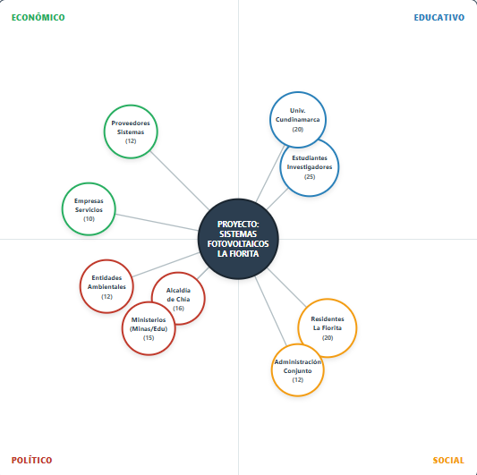

Identificación de actores del proyecto
Paso 2Identificación de causas y efectos
Paso 3Transformación de problemas en soluciones
Paso 4Definición del camino a seguir
Paso 5Organización del proyecto
Paso 6Descripción final del proyecto
Identificación de actores clave como residentes, administradores del conjunto y entidades energéticas. Se analizan intereses, influencia y posibles impactos en el proyecto.
Relación entre actores según poder e interés.

| Involucrado | Categoría | Expectativa | Fuerza | Resultante |
|---|---|---|---|---|
| Estudiantes Investigadores | Educativo | 5 | 5 | 25 |
| Universidad de Cundinamarca | Educativo | 4 | 5 | 20 |
| Residentes conjunto La Fiorita | Social | 5 | 4 | 20 |
| Alcaldía de Chía (Medio Ambiente) | Político | 4 | 4 | 16 |
| Ministerios (Minas / Educación) | Político | 3 | 5 | 15 |
| Proveedores sistemas fotovoltaicos | Económico | 4 | 3 | 12 |
| Administradora La Fiorita | Social | 3 | 4 | 12 |
| Entidades Ambientales (IDEAM/CAR) | Político | 4 | 3 | 12 |
| Empresas servicios públicos | Económico | 2 | 5 | 10 |
Los residentes tienen alto impacto al ser usuarios directos, pero su influencia es media. La administración posee alta influencia por su rol decisivo en la implementación del proyecto.
Las entidades energéticas presentan alta influencia debido a regulaciones, aunque su impacto directo en el uso cotidiano es menor.
Se identifican causas y efectos del problema central: alto consumo energético y emisiones contaminantes por uso de gas.
Causas y efectos
AbrirEl árbol de objetivos transforma cada problema identificado en su solución positiva. Permite ver qué se quiere alcanzar, por qué vale la pena y cómo se va a lograr, bajo la metodología Marco Lógico (CEPAL).
Objetivo general y tres objetivos específicos del proyecto.
AbrirCadena de beneficios esperados al lograr el objetivo central.
AbrirAcciones y medios concretos para alcanzar el objetivo.
AbrirImplementación de sistemas fotovoltaicos como solución principal.
La EAP organiza el proyecto en 4 niveles jerárquicos: Fin, Propósito, Componentes y Actividades. Es la base para construir la Matriz de Marco Lógico.